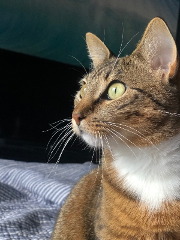

|  |
The Ultimate Guide of Care and Necessities for 🐈Ms.Lani Mittens🐈 (Lah-Nee)
In this Guide She tells you Exactly Word for Word what she needs from a caretaker
as Gracious and Loving as you! |
Coffee n' Catnip

In this section im going to talk about how we get our mornings started (check lvl of Food + Water).
To-Do List
- Wake up fatha by stomping on top of his chest with full force!
- Get my Morning Pets from the fatha.
- Start my Yoga Practice as the fatha tells me "Good Stretch Bubbas!"
- While my fatha has his Morning Joe I too have my Morning 'Nip.
Low Maintance Vibes
At this time of day fatha has to catches some bread. Meanwhile I definitely don't nap on the job and Serve and Protect this house!
- Before fatha has to leave we play for 15mins at a time.
- I don't wanna play all the time and need a bump of 'Nip to get me started.
- Once i'm feeling tuckered out just give me a few minutes bc im not a bruiser im more of an assassin that needs to recharge my energy before i can go back in (or else I'll have the zoomiez).
- I really Luv to nap or just hang out so make sure to play w/ me for almost a whole hour a day (doenst have to be all at once either!). In return, as a retired JuJu Sourcers, i'll keep away the Cursed Spirits.
Long at Last
As the day turns to night, I just have a few more request to ask of you 😿.
Cont. To-Do List
- Treat time!
- Some Nights I still have a little energy or get needy and want some pets after a long day of SLAYING.
- If time permits, I put in Overtime and slay the evil spirits downstairs too (just put away the dogs because I slay best alone.)!
Contact, My Goals, Work History
{kind=link}